圆锥曲线
在上一章中，我们初步领略了解析几何的一些基本特点，知道通过建立平面直角坐标系得到直线的方程, 然后利用方程讨论点与直线、直线与直线的位置关系. 在这一章中, 通过对圆锥曲线的研究, 我们进一步深入解析几何的核心领域并体验解析几何的思想和作用.
对圆锥曲线的研究虽然可以追溯到两千多年前的古希腊时代，但直到笛卡儿坐标系的引入, 才找到更一般且统一的处理方法. 在直角坐标平面上, 所有圆锥曲线都可以用二元二次方程来表示，从而可以用方程的思想去解决与这些曲线有关的问题. 由于圆锥曲线是日常生活中常见的曲线，在航天、航海、光学等领域都有广泛的应用，这使得解析几何成为数学的一个重要分支.
除了直线和圆以外, 椭圆、双曲线和抛物线已经与平面几何所涉及的内容有本质的区别, 但却与函数有了联系, 如反比例函数的图像是双曲线、二次函数的图像是抛物线等.
1 曲线方程的概念
在上一章 1.2 节中, 我们针对具体的例子解释了什么是 “直线的方程”, 从而引导了全章的学习. 通过上一章的学习, 我们对“直线方程”有了更多认识. 在此基础上我们不难总结出“直线方程”的严格定义:在一个平面直角坐标系中给定一条直线和一个关于 与 的二元一次方程,如果给定直线上的每一个点的坐标都是该给定方程的解, 而且以给定方程的解为坐标的点都在该给定直线上, 那么称这个给定的方程是给定直线的方程.
如果考虑更为一般的平面曲线 (直线是它的特例), 可以直接把这个定义推广而给出曲线方程的概念: 在一个平面直角坐标系中给定一条曲线和一个关于 与 的二元方程,如果给定曲线上的每一个点的坐标都是该给定方程的解, 而且以给定方程的解为坐标的点都在该给定曲线上, 那么称这个给定的方程是给定曲线的方程, 也称这条给定的曲线是给定方程的曲线.
2 圆的标准方程
在各种非直线的平面曲线中, 我们最熟悉的是圆.
在平面几何中已经知道, 圆 (circle) 是到一个定点的距离等于定长 (大于零) 的点的轨迹. 这个定点就是圆心 (center), 定长就是圆的半径 (radius). 如果一个圆在直角坐标平面上, 我们该如何确定这个圆的位置, 并且建立圆的方程呢?
显然, 只要圆心的位置及圆的半径确定, 一个圆在平面上的位置就完全确定了. 假设在平面直角坐标系中,已知圆 的圆心是 ,半径是 ,如图 2-1-1 所示. 我们来考察这个圆上的动点 的坐标所满足的方程.
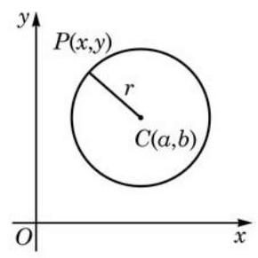
图 2-1-1
因为 ,即 ,两边平方后得
①
所以圆 上任意一点 的坐标都满足方程①.
反之,若平面上有一点 的坐标 是方程①的解,则 ,即 ,可得 . 所以,点 在以 为圆心、以 为半径的圆上.
特别地,当 ,即圆心在原点 时,圆的标准方程为
若设 为圆 上任意一点,能否由 求得圆 的方程?
例题 1
答案与解析收起 / 展开
解 由已知,圆心 为线段 的中点,可得圆心 的坐标为 .
又半径 为直径 长度的一半,即
因此,所求圆的标准方程为 .
例题 2
例 2 设平面上有一条长度为 4 的线段 ,试建立适当的平面直角坐标系,求到线段 两端点的距离的平方和为 16 的点的轨迹方程.
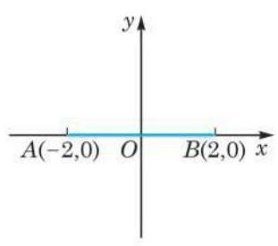
图 2-1-2
答案与解析收起 / 展开
解 如图 2-1-2,取 的中点 为原点, 所在直线为 轴,射线 方向为它的正方向,以过点 且垂直于 的直线为 轴,建立平面直角坐标系,则有 .
设点 到 两点的距离的平方和为 16,就有
化简,得
因此,所求轨迹方程为 ,其轨迹是以 为圆心、以 为直径的圆.
例题 3
例 3 造船时, 为了船体放样, 要画出甲板圆弧线. 由于这条圆弧线的半径很大, 无法直接在钢板上用圆规画出, 需要先建立这条圆弧线的方程, 再用描点法画出圆弧线. 如图 2-1-3, 已知圆弧 的半径 为 ,圆弧 所对的弦长 为 , 以 为单位,建立适当的平面直角坐标系,并求圆弧 的方程. (结果精确到 )
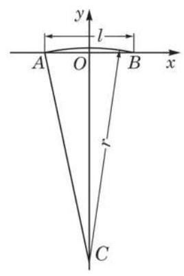
图 2-1-3
答案与解析收起 / 展开
解 以弦 所在直线为 轴 (射线 方向为 轴正方向), 弦 的垂直平分线为 轴,建立平面直角坐标系. 可知弦的端点坐标分别为 .
设圆弧的圆心为 ,连接 ,则
从而
即圆心的坐标为 .
所以,圆弧 的方程为 , .
例题 4
例 4 已知一个圆与 轴相切,其圆心在直线 上,且直线 被该圆截得的弦长为 . 求此圆的方程.
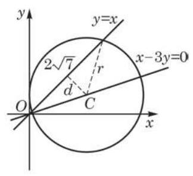
图 2-1-4
答案与解析收起 / 展开
解 如图 2-1-4,设所求圆的圆心为 ,半径为 ,则由圆心在直线 上,得 ,又圆与 轴相切,得半径 .
圆心到直线 的距离
由勾股定理,可得 ,即
解得
当 时, ,圆的方程为 ;
当 时, ,圆的方程为 .
因此,所求圆的方程为 或
练习 2.1(1)
练习2.1(1) · 1
答案与解析收起 / 展开
练习2.1(1) · 2
答案与解析收起 / 展开
练习2.1(1) · 3
- 一个圆与 轴相切于点 ,且在 轴正半轴上截得长为 6 的弦. 求此圆的方程.
答案与解析收起 / 展开
3 圆的一般方程
我们知道直线的一般式方程是 ( 不同时为零).
下面来建立圆的一般方程.
把圆的标准方程 展开并整理,可得
由此可见, 任何一个圆的方程都可以写成下面的形式:
②
其中, 均为实常数.
反过来,如果给定实常数 ,方程②是否都表示一个圆呢? 将方程②左边配方并整理, 可得
由此可以看出:
(1)当 时，方程②表示以(-2、b，-3 b) 心、以 为半径的圆；
( 2 )当 时，方程②表示一个点 ；
(3)当 时，方程②没有实根，此时方程 ②不表示任何图形.
例题 5
答案与解析收起 / 展开
解 设所求圆的方程为
其中 是待定常数.
因为点 在所求圆上,所以有方程组
解得
此时
因此,所求圆的方程为 .
例题 6
例 6 若圆 与直线 相交于 两点,且 (其中点 为坐标原点). 求 的值和圆的方程.
答案与解析收起 / 展开
解 由圆的一般方程,知 ,即 .
设两个交点 的坐标分别为 ,它们应满足如下方程组
①
②
将②代入①，整理得
③
因为方程③有两个相异实根 和 ,所以
即 的值应满足 ,此时 ,满足圆方程的条件.
由根与系数的关系,得 .
再由方程②，得 .
所以, .
再由 ,得 ,满足条件 .
因此,所求圆的方程为 .
练习 2.1(2)
练习2.1(2) · 1
答案与解析收起 / 展开
练习2.1(2) · 2
答案与解析收起 / 展开
- 当 时,表示直线 ; 当 时,表示以 为圆心,以 为半径的圆.
练习2.1(2) · 3
- 已知两点 ,动点 到点 的距离是它到点 的距离的 3 倍. 求点 的轨迹方程.
答案与解析收起 / 展开
4 直线与圆的位置关系
在平面几何中, 我们已经知道直线与圆的三种位置关系: 有两个不同的公共点时二者相交, 有且只有一个公共点时二者相切, 没有公共点时二者相离. 本节我们将借助圆和直线的方程, 利用代数方法来讨论直线与圆的位置关系.
把圆的方程写成 ,依据平面几何知识,直线 与圆的位置关系取决于圆心 到 的距离和半径 的大小关系, 请用上一章所学的点到直线距离的知识, 把各种不同的位置关系描述出来.
从而, 可以通过讨论上述方程组的解的不同情形来判断直线与圆的位置关系.
例题 7
例 7 已知圆 的方程是 . 当 为何值时,直线 与圆 分别有两个不同的公共点？有一个公共点? 没有公共点?
答案与解析收起 / 展开
解 解方程组
① ②
把①化为 ，代入②式，得
即
③
方程③的判别式是
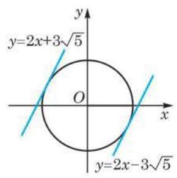
图 2-1-5
当 ,即 时,方程③有两个不相等的实根,从而原方程组有两组不同的实数解,所以直线 与圆 有两个不同的公共点.
当 ,即 或 时,方程③有两个相等的实根,从而原方程组有两组相同的实数解,所以直线 与圆 只有一个公共点(图 2-1-5).
当 ,即 或 时,方程③没有实根,从而原方程组没有实数解,所以直线 与圆 没有公共点.
例题 8
例 8 (1)如图2-1-6，已知 为圆 : 上一点,求过点 的圆 的切线 的方程;
(2)求过点 且与圆 相切的直线的方程.
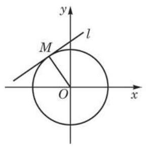
图 2-1-6
答案与解析收起 / 展开
解 (1) 因为 是 与圆 的切点,可知 ,且过点 的半径 与 垂直,即 是 的一个法向量,于是可得切线 的点法式方程为
整理, 得
?
所以,过点 的圆 的切线 的方程为 .
请将例 8(1) 的结论加以推广, 使之成为推广后命题的一个特例.
(2)由 ,知点 在已知圆 外.
先考虑过点 且具有斜率 的直线,可设其方程为
此直线与圆 相切当且仅当圆心 到该直线的距离为 2 , 所以
解得 .
? 因此,得到过点 的圆 的一条切线,它的方程为
我们还可以验证圆心到直线 的距离等于半径 2 . 想一想, 这个验证是否必须?
过点 可以作圆 的两条切线,故另一条切线的斜率不存在,则其方程只能是 ,即 .
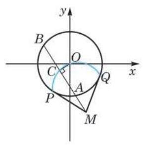
图 2-1-7
因此,所求直线的方程为 或 .
例题 9
例 9 过圆 外一点 任意作一条割线交圆 于 两点,求弦 的中点 的轨迹.
答案与解析收起 / 展开
解 如图 2-1-7,设弦 的中点 的坐标为 ,连接 . 可得 ,即 ,从而
又因为 ,
所以 ,即
因此,点 的轨迹是以 为圆心、以 为半径,且位于圆 内的一段圆弧 (图 2-1-7).
例 9 还有其他解法吗?
练习 2.1(3)
练习2.1(3) · 1
- ( 1 )求经过点 且与圆 相切的直线的方程；
(2)求经过点 且与圆 相切的直线的方程.
答案与解析收起 / 展开
练习2.1(3) · 2
- 当 为何值时,直线 与圆 分别有如下位置关系:
(1)相交； (2)相切； (3)相离.
答案与解析收起 / 展开
练习2.1(3) · 3
- 已知直线 经过点 且被圆 截得长为 的弦,求 的方程.
答案与解析收起 / 展开
5 圆与圆的位置关系
圆是常见的平面几何图形, 两个或多个圆之间不同位置关系的合理使用, 会对装置的功能或艺术品的美感产生不同的作用. 如图 2-1-8 中的自行车双轮、滚珠轴承、奥运五环、花布图案, 都是圆的位置关系应用的实例.
图 2-1-8
我们只讨论两个圆的位置关系.
从初中的平面几何学习中, 我们知道两个圆之间有内含(包括同心)、内切、相交、外切和外离五种位置关系. 在平面直角坐标系中, 如果给出两个圆的标准方程
我们就可以从方程中读出两个圆的圆心坐标 , 半径 ,进而由圆心坐标求得圆心距
所以
当 时,两圆内含; 当 时,两圆内切; 当 时,两圆相交; 当 时,两圆外切; 当 时,两圆外离.
如果给出两个圆的一般方程
我们当然可以把它们都化成标准方程, 然后用上述圆心距与半径的关系判断这两个圆的位置关系. 此外, 我们也可以像判断两条直线的位置关系与判断直线和圆的位置关系那样, 通过解联立方程组判断两个圆有几个公共点, 从而得知它们是相交、相切(包括内切与外切)还是相离 (包括内含与外离). 因此, 我们解方程组
如果上述方程组有两组不同的解,那么圆 与圆 相交; 如果上述方程组只有一组解 (实际上应该理解为两组相同的解, 因为它们是由一元二次方程两个相同的根得出的),那么圆 与圆 内切或外切; 如果上述方程组无解,那么圆 与圆 内含或外离.
上述方程组由两个二元二次方程组成, 只要把这两个方程相减, 一般情况下可以得到一个二元一次方程
因此, 求解上述方程组, 只要把这个二元一次方程和上述方程组中的任何一个方程联立求解就可以了.
例题 10
答案与解析收起 / 展开
解 联立方程组 将两方程相减并化简, 得 . 把它代入第一个方程得到 ,解得 , ,从而 .
当 与 不同时为零时，二元一次方程 所表示的直线有什么几何意义吗?
当 与 同时为零时, 两圆有什么样的位置关系?
所以,圆 与圆 相交于两点 .
我们介绍了两种判断两个圆的位置关系的方法: 一是化成标准方程后利用两圆圆心距和半径的关系来判断; 二是用解方程法求出公共点坐标后再判断. 两种方法各有利弊, 前者能够准确区分内切与外切、内含与外离, 但无法给出公共点坐标; 后者可以给出公共点坐标, 但无法区分内切与外切、内含与外离. 解题时应根据需要采用适当的方法, 或者两者并用, 求出所有需要的信息.
例题 11
答案与解析收起 / 展开
解 把两个方程都化成圆的标准方程:
这两个圆的圆心坐标分别是 与 ,从而它们的圆心距是 . 两个圆的半径分别是 与 . 于是 ,所以圆 与圆 内切.
把两个圆的方程相减并整理得 . 代入圆 的方程并化简得 . 这个一元二次方程有两个相同的根 ,从而 . 由此得到圆 与圆 的切点是 .
例题 12
例 12 如图 2-1-9(1),圆 与圆 的半径都是 1, ,过动点 分别作圆 、圆 的切线 、 分别为切点),使得 . 试通过建立适当的平面直角坐标系,求动点 的轨迹.
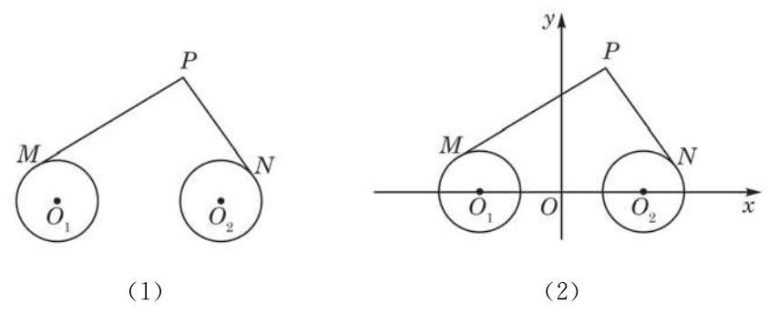
图 2-1-9
答案与解析收起 / 展开
解 如图 2-1-9(2),以 的中点 为原点, 所在直线为 轴,以线段 的垂直平分线为 轴,建立平面直角坐标系,则 的坐标为 的坐标为 . 由 ,得 .
又因为两圆的半径均为 1,所以由勾股定理,得 ,从而 .
设点 的坐标为 ,则
整理, 得
Q
化为标准方程, 得
注意轨迹与轨迹的方程二者的区别与联系.
因此，所求的轨迹是以(6，0)为圆心、以 为半径的圆.
练习 2.1(4)
练习2.1(4) · 1
- 已知圆 和圆 ,当 为何值时,圆 与圆 分别内切、相交?
答案与解析收起 / 展开
练习2.1(4) · 2
答案与解析收起 / 展开
练习2.1(4) · 3
答案与解析收起 / 展开
习题 2.1
A 组
习题2.1A · 1
- 根据下列条件,分别求圆的方程:
(1)圆心为 ,半径 ；
(2)圆心为 ，过点 ；
(3)与 轴相交于 、 两点，且半径等于✓5.
答案与解析收起 / 展开
习题2.1A · 2
- 已知圆 ,求在下列情况下,实数 应分别满足什么条件:
(1)圆过原点； (2)圆心在 轴上；
(3)圆与 轴相切； (4)圆与两坐标轴均相切.
答案与解析收起 / 展开
习题2.1A · 3
答案与解析收起 / 展开
习题2.1A · 4
答案与解析收起 / 展开
习题2.1A · 5
- 直线 与圆 相交于 两点,且弦 的中点为 . 求直线 的方程.
答案与解析收起 / 展开
习题2.1A · 6
- 已知圆过原点，且与 轴、 轴的交点的坐标分别为 、 ，其中 . 求这个圆的方程.
答案与解析收起 / 展开
习题2.1A · 7
答案与解析收起 / 展开
习题2.1A · 8
- 已知直线 和圆 相交于 两点,求弦 的垂直平分线的方程.
答案与解析收起 / 展开
习题2.1A · 9
答案与解析收起 / 展开
习题2.1A · 10
答案与解析收起 / 展开
习题2.1A · 11
- 圆拱桥的一个圆拱如图所示,该圆拱的跨度 为 ,拱高 为 ,在建造过程中每隔 需用一个支柱支撑. 求支柱 的高度. (结果精确到 )
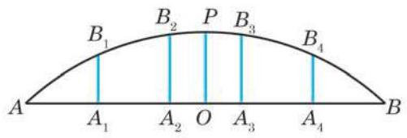
(第 11 题)
答案与解析收起 / 展开
B 组
习题2.1B · 1
- 给定点 与圆 ,求圆 的过点 最短弦所在直线的方程.
答案与解析收起 / 展开
习题2.1B · 2
- 一个圆过点 ,圆心在直线 上,且与直线 相切. 求这个圆的方程.
答案与解析收起 / 展开
习题2.1B · 3
答案与解析收起 / 展开
习题2.1B · 4
答案与解析收起 / 展开
习题2.1B · 5
- 已知动直线 (其中 ) 和圆 相交于 两点,求弦 的中点的轨迹方程.
答案与解析收起 / 展开
习题2.1B · 6
答案与解析收起 / 展开
习题2.1B · 7
- 已知直线 和曲线 有两个不同的交点,求实数 的取值范围.
答案与解析收起 / 展开
习题2.1B · 8
- 已知直线 与圆 ,求圆 上各点到直线 的距离的最大值.
答案与解析收起 / 展开
习题2.1B · 9
答案与解析收起 / 展开
习题2.1B · 10
- 标准跑道的内圈如图所示( 标准跑道最内圈的长度为 )，其中左右两端均是半径为 的半圆弧.
(1)求每条直道的长度; (π 取 3.14，结果精确到 )
(2)建立适当的平面直角坐标系，写出上半部分跑道所对应的函数表达式.
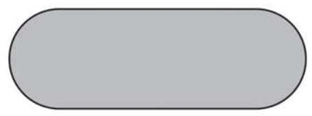
(第 10 题)
答案与解析收起 / 展开
- (1)87 m (2)建立如图 2-R7 所示的平面直角坐标系,则所求的函数表
达式为
探究与实践
追捕走私船
如图 2-1-10,设直线 为公海与领海的分界线,一巡逻艇在 处发现北偏东 海面 处有一艘走私船,此走私船正向停泊在公海上接应的走私海轮 航行,以便上海轮后逃窜. 已知巡逻艇的航速是走私船航速的 2 倍, 与公海相距约 12 海里,走私船可能向任一方向逃窜. 请回答下列问题:
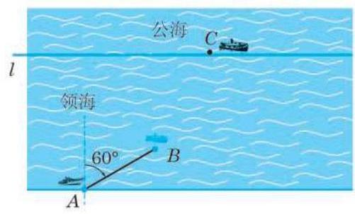
图 2-1-10
(1)如果走私船和巡逻艇都是沿直线航行，那么走私船能被截获的点是哪些？
(2)根据截获点的轨迹，探讨“可截获区域”和“非截获区域”；
(3)如果走私船在非截获区域就进入公海，那么巡逻艇追捕失败. 要保证在领海内捕获,就应保证 “非截获区域” 与公海区域不相交 (即交集为空集). 此时, 相距最远是多少海里?